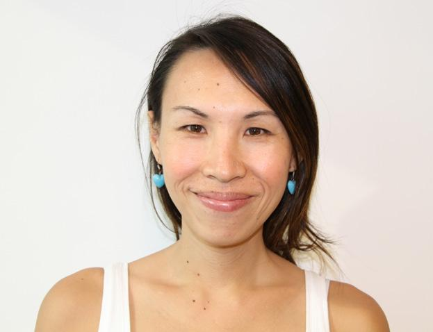

Team
- Written and Directed by Quen Wong
- Featuring Quen Wong, Sanisa, Lune Loh, Francis Bond, Dominic Wong, June Chua, Amy Tashiana, Judy Chia
- Cinematographer & Editor: Looi Wan Ping
- Producer & Location Sound: Ziq Low
- Additional Camera: Damien Goh
- Original Music: August Lum
- Audio Post Production: Cheng Lijie
- Colourist: Junbin Chen, CSI
- Graphic Design: CROP
- Executive Producer: Glen Goei
- Production Company: Tiger Tiger Pictures
- Webpage by Francis Bond and Quen Wong
- Transgender icon by Ecelop - Flaticon
Quen Wong (writer and director)
Quen Wong is a Singaporean filmmaker. In 2018, she directed ‘Building Bridges’, one of five short films created for Singapore’s Pink Dot protest against Section 377A, the law criminalising sex between consenting males.
Quen’s body of work also includes ‘Power and Piety: The Hellfire Nation’ (2018), an essay film about the influence of Christian evangelicalism on American politics. Hosted by BAFTA- winner Mobeen Azhar, the film was syndicated on National Geographic Australia and BBC Arabic. Quen also directed ‘Undercover Asia:Treatment or Torture’ (2014), an investigation of human rights abuses allegedly taking place in drug rehabilitation centres in Cambodia. It was syndicated on AETN Asia.
Previously, Quen was an award-winning trailer producer and content creator with National Geographic Channel Asia. She clinched Promax/BDA (Asia) Gold Awards for Best Interstitial: Nat Geo’s Top 30 Winner (2009) and Best Script: Preserve our Planet (2008), among others.
Some Women’ is Quen’s first feature film. It was a recipient of the Tan Ean Kiam Foundation – SGIFF Southeast Asian Documentary Grant (SEADOC) in 2019 and the IDFA (International Documentary Film Festival Amsterdam) Project Award at Docs by the Sea in 2020.
Looi Wan Ping (cinematographer and editor)
Looi Wan Ping is a founding member of the film collective 13 Little Pictures. He was conferred the Young Artist Award in 2012 by the National Arts Council, Singapore’s highest award for young arts practitioners. In 2016, he was selected for the Berlinale Talents.
Looi shot Daniel Hui’s ‘Demons’ (Berlinale Forum 2019), shot and edited Lei Yuan Bin’s ‘I Dream of Singapore’ (Berlinale Panorama 2020), and shot and edited Tan Bee Thiam’s ‘Tiong Bahru Social Club’ (Busan 2020).
Low Zi Qi (producer and location sound)
Low Zi Qi is a Singaporean filmmaker and alumnus from LASALLE College of the Arts’s Puttnam School of Film. Her personal works usually explore the themes of identity and existentialism. She is the associate producer of Lei Yuan Bin’s ‘I Dream of Singapore’ (Berlinale Panorama 2020) and Tan Bee Thiam’s ‘Tiong Bahru Social Club’ (2020). ‘Some Women’ is her first feature-length documentary as a Producer.
Glen Goei (executive producer)

Glen is one of Singapore’s leading film and theatre directors. Glen’s feature, Forever Fever (1998), was the first Singapore film to be screened at the Sundance Film Festival and the first to achieve a worldwide commercial release. His second film, The Blue Mansion (2009) premiered at the Busan International Film Festival and won the Best Film and Best Director Awards at the SPH Entertainment Awards. His most recent directorial work “Revenge of the Pontianak” clinched the highest box office record for a Malay language film in Singapore and sold to Netflix even before its commercial release. For the past six years, Glen has served as Chairman of the Board of Directors of the Asian Film Archive, an institution dedicated to the conservation, preservation and restoration of Asian cinema.
He was also the co-founder and co-author of Ready4Repeal, a petition and movement to repeal Section 377A of Singapore’s Penal Code, a law that criminalizes sex between gay men.
Glen has created the Unseen series of original, feature length documentaries giving voice to marginalised communities in South East Asia. The first was “I Dream of Singapore”, an observational documentary about migrant workers who become casualties from workplace related accidents. It premiered internationally and in competition at the Berlin International Film Festival (2020).
‘Some Women’ is the second film in this series.
Some Women
Some women take a different path to womanhood